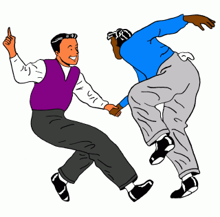

Swingin’ OUT is a non-profit club run by volunteers that organizes swing dancing events for Toronto’s queer (lesbian, gay, bisexual, transgender) community.
Lessons start up again January 17, 2008. Prepare for a swingin' new year!
Social dancing follows the beginner lesson, continuing to 10:00 p.m. Stay to dance, practice what you learned, hang out, and listen to great swing music. For beginners, the cover charge for the lesson and social dancing is just $5.
See our calendar for details and last-minute changes.
It is, in fact, the bee’s knees. If you have never done it, you owe it to yourself to give it a try. It can be extremely energetic at fast tempos, or more smooth at slow ones; it can be playful, creative, elegant or silly, depending on your mood. It’s great to be able to connect with a partner while dancing rather than just shimmying by yourself in a crowd. We rotate partners often, so you will have a chance to dance with lots of people.
We mostly do Lindy Hop dancing, which was the original form of swing dancing from the 1930s and 1940s. We also do other dances from the same era: Charleston, Balboa, Blues and mob dances like the the Shim Sham Shimmy and the Jitterbug Stroll. These dances were invented during the Big Band Era of swing music, which was truly a golden age for creativity in popular music.
Here's how swing dancing can look:
We have performed on stage at Pride for the past five years. We have also performed for the AIDS Walk. The club also organizes occasional special events like brunches (often followed by dancing outside on Church Street), and “Lindy Bombs,” where a group of us go Lindy Hopping at a non-swing-dancing-specific venue such as Grapefruit or Tallulah’s Cabaret.
There is a large and lively swing dancing community in Toronto. The dances and other events that are mostly straight are very welcoming towards the queer community, so there are lots of opportunities to go out swing dancing in Toronto. If you ever travel to other cities, it’s quite likely there will be Lindy Hop events you can attend there too.
Join our mailing list! You will get email updates and reminders about Swingin’ OUT events. If you have a Yahoo! account (they’re free) you can join the list by visiting SwinginOut at Yahoo! Groups. Otherwise, send an email to SwinginOut-subscribe@yahoogroups.com to subscribe. The list is moderated (so you won’t get spam) and has fairly low traffic.
Subscribe to our calendar! It's the quickest way to keep up to date on events being organized and attended by Swingin’ OUT. Google Calendar users can simply add it to their calendar. We also have an ICAL feed available for users of applications like iCal and Mozilla Sunbird.
Check out the following links for information about Swingin’ OUT and some of our friends in the swing and queer dance communities:
| Problems? Contact . |